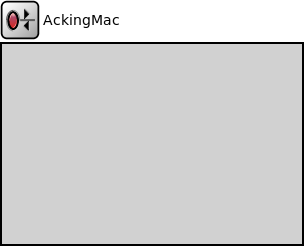

Package: inet.linklayer.acking
AckingMac
compound moduleThis module implements a trivial MAC protocol for use in ~AckingWirelessInterface.
The implementation provides packet encapsulation and decapsulation, but it doesn't have a real medium access protocol. It doesn't provide carrier sense mechanism, collision avoidance, collision detection, but it provides optional out-of-band acknowledgement. Higher layer packets should have MacAddressReq tag.
See ~AckingWirelessInterface for rationale and details.
Inheritance diagram
The following diagram shows inheritance relationships for this type. Unresolved types are missing from the diagram.
Used in compound modules
| Name | Type | Description |
|---|---|---|
| AckingWirelessInterface | compound module |
This module implements a highly abstracted wireless network interface (NIC) that uses a trivial MAC protocol. It offers simplicity for scenarios where Layer 1 and 2 effects can be completely ignored, for example testing the basic functionality of a wireless ad-hoc routing protocol. |
| Ieee802154UwbIrInterface | compound module |
This module implements an IEEE 802.15.4 UWB-IR network interface. |
Extends
| Name | Type | Description |
|---|---|---|
| MacProtocolBase | simple module |
Module base for different MAC protocols. |
Parameters
| Name | Type | Default value | Description |
|---|---|---|---|
| interfaceTableModule | string | ||
| address | string | "auto" |
MAC address as hex string (12 hex digits), or "auto". "auto" values will be replaced by a generated MAC address in init stage 0. |
| bitrate | double | ||
| mtu | int | 4470B | |
| headerLength | int | 16B |
AckingMacHeader length |
| promiscuous | bool | false | |
| fullDuplex | bool | true |
allows transmitting and receiving simultaneously (transceiver radio mode) |
| useAck | bool | true | |
| ackTimeout | double | 100ms |
Properties
| Name | Value | Description |
|---|---|---|
| display | i=block/rxtx | |
| class | AckingMac |
Gates
| Name | Direction | Size | Description |
|---|---|---|---|
| upperLayerIn | input | ||
| upperLayerOut | output | ||
| lowerLayerIn | input | ||
| lowerLayerOut | output |
Signals
| Name | Type | Unit |
|---|---|---|
| linkBroken | inet::Packet |
Statistics
| Name | Title | Source | Record | Unit | Interpolation Mode |
|---|---|---|---|---|---|
| passedUpPk | packets passed to higher layer | packetSentToUpper | count, sum(packetBytes), vector(packetBytes) | none | |
| rcvdPkFromHl | packets received from higher layer | packetReceivedFromUpper | count, sum(packetBytes), vector(packetBytes) | none | |
| packetDropInterfaceDown | packet drop: interface down | packetDropReasonIsInterfaceDown(packetDropped) | count, sum(packetBytes), vector(packetBytes) | none | |
| packetDropNotAddressedToUs | packet drop: not addressed to us | packetDropReasonIsNotAddressedToUs(packetDropped) | count, sum(packetBytes), vector(packetBytes) | none | |
| sentDownPk | packets sent to lower layer | packetSentToLower | count, sum(packetBytes), vector(packetBytes) | none | |
| linkBroken | link break | linkBroken | count | none | |
| rcvdPkFromLl | packets received from lower layer | packetReceivedFromLower | count, sum(packetBytes), vector(packetBytes) | none | |
| packetDropIncorrectlyReceived | packet drop: incorrectly received | packetDropReasonIsIncorrectlyReceived(packetDropped) | count, sum(packetBytes), vector(packetBytes) | none |
Source code
// // This module implements a trivial MAC protocol for use in ~AckingWirelessInterface. // // The implementation provides packet encapsulation and decapsulation, but it // doesn't have a real medium access protocol. It doesn't provide carrier sense // mechanism, collision avoidance, collision detection, but it provides optional // out-of-band acknowledgement. Higher layer packets should have MacAddressReq // tag. // // See ~AckingWirelessInterface for rationale and details. // module AckingMac extends MacProtocolBase like ILinkLayer, IMacProtocol { parameters: string address @mutable = default("auto"); // MAC address as hex string (12 hex digits), or // "auto". "auto" values will be replaced by // a generated MAC address in init stage 0. double bitrate @unit(bps); int mtu @unit(B) = default(4470B); int headerLength @unit(B) = default(16B); // AckingMacHeader length bool promiscuous = default(false); bool fullDuplex = default(true); // allows transmitting and receiving simultaneously (transceiver radio mode) bool useAck = default(true); double ackTimeout @unit(s) = default(100ms); @class(AckingMac); @signal[linkBroken](type=inet::Packet); @statistic[linkBroken](title="link break"; source=linkBroken; record=count; interpolationmode=none); @statistic[passedUpPk](title="packets passed to higher layer"; source=packetSentToUpper; record=count,"sum(packetBytes)","vector(packetBytes)"; interpolationmode=none); @statistic[sentDownPk](title="packets sent to lower layer"; source=packetSentToLower; record=count,"sum(packetBytes)","vector(packetBytes)"; interpolationmode=none); @statistic[rcvdPkFromHl](title="packets received from higher layer"; source=packetReceivedFromUpper; record=count,"sum(packetBytes)","vector(packetBytes)"; interpolationmode=none); @statistic[rcvdPkFromLl](title="packets received from lower layer"; source=packetReceivedFromLower; record=count,"sum(packetBytes)","vector(packetBytes)"; interpolationmode=none); @statistic[packetDropIncorrectlyReceived](title="packet drop: incorrectly received"; source=packetDropReasonIsIncorrectlyReceived(packetDropped); record=count,sum(packetBytes),vector(packetBytes); interpolationmode=none); @statistic[packetDropInterfaceDown](title="packet drop: interface down"; source=packetDropReasonIsInterfaceDown(packetDropped); record=count,sum(packetBytes),vector(packetBytes); interpolationmode=none); @statistic[packetDropNotAddressedToUs](title="packet drop: not addressed to us"; source=packetDropReasonIsNotAddressedToUs(packetDropped); record=count,sum(packetBytes),vector(packetBytes); interpolationmode=none); }File: src/inet/linklayer/acking/AckingMac.ned
 This documentation is released under the Creative Commons license
This documentation is released under the Creative Commons license